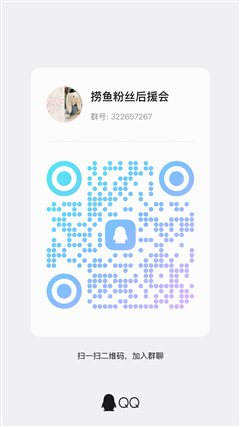

AirPods 小助手
未连接
选择设备后连接

粉丝群一起摸鱼聊技术先在 Windows 声音设置确认耳机为默认输出并点「测试」；若输出列表没有耳机，在「更多声音设置 → 播放」中显示已禁用的设备，仅当这副耳机的播放项显示「已停用」时启用它。仍无声再手动关开电脑蓝牙；再不行只遗忘这副耳机并重新配对；最后重启电脑。应用不会自动重置整机蓝牙。
主要卡在驱动签名与兼容性。
降噪、通透走的是苹果私有的控制通道，Windows 自带的蓝牙不向普通程序开放它。已调研的同类 Windows 实现都依赖内核驱动。
正常安全配置下，内核驱动需要符合微软可信签名要求。这套保护机制是必要的。
涉及 BIOS 安全设置，桌面可能长期显示测试模式水印；电脑安全性下降，还可能触发磁盘加密恢复、影响网游反作弊。
2026 年 4 月 Windows 更新后，部分系统版本在使用期间需要持续降低驱动安全防护；安全软件或反作弊也可能告警。
企业 EV 证书 → 微软硬件开发者计划 → 签名与兼容性验证。目标体验：只需确认管理员权限，不降低系统防护。商业分发条款仍需核实。
这条路的门槛已经摸清，条件合适就去做。在那之前，小助手先把「免驱动、零管理员、点一下就连」做稳。
很多同学问：别的软件都能切降噪、通透，小助手为什么不行？我想跟大家交个底。
1. 为什么需要驱动？ AirPods 的控制指令走苹果私有通道，Windows 自带蓝牙不向普通程序开放它。已调研的同类实现依赖内核驱动。
2. 签名是一道安全门槛。 Windows 对内核驱动有可信签名要求。这套保护机制能挡住不可信软件，小助手也得满足它。
3. 我不想让你承担安全代价。 测试签名涉及 BIOS 安全设置、测试模式水印、磁盘加密恢复及反作弊风险；社区签名在部分系统版本使用期间需要持续降低驱动安全防护，也可能引起安全软件告警。
4. 正规路径有成本。 企业需要 EV 代码签名证书、微软硬件开发者计划、签名和兼容性验证。证书参考价约每年 ¥4,288–6,888，实际费用及商业分发条款仍要确认。
5. 所以目前暂缓。 条件合适再做。在那之前，我想先把免驱动、零管理员、点一下就连这件事做稳。如果你懂驱动开发，欢迎一起交流。
登录 Windows 后自动在后台运行（默认关闭）
未设置时默认关闭，保留你原来的麦克风。优先保留立体声和电脑/外接麦克风。开启后，下次连接尝试选择耳机麦克风（Classic 通话音质）；关闭时尝试恢复本次由小助手改过的选择，不覆盖你后来的手动选择。
微信语音或游戏使用蓝牙耳机麦克风时，Windows 可能切到通话模式。关闭此开关不禁用耳机麦克风，也不结束其他应用的录音；可改用电脑或外接麦克风，再重新开始通话。旧版本或重启前的选择需手动确认。
开启后若录音设备缺失，下次连接仅尝试一次恢复这副耳机的 HFP 服务，可能安装驱动；不重置整机蓝牙、不动其他设备。
用耳机麦克风通话时，Windows 会把耳机切到电话音质（单声道）。这是经典蓝牙的协议限制，Windows 上的同类软件都一样，小助手改不了。
想让音质不变差：在微信、会议或游戏语音里把麦克风选成电脑自带或外接麦克风，耳机只用来听。这样也避免了来回切换造成的掉线。
Mac 上效果好，是因为 Apple 设备之间有自己的宽带通话通道。
音频失败不等于无线电故障；此版本不再自动重置全部蓝牙设备。